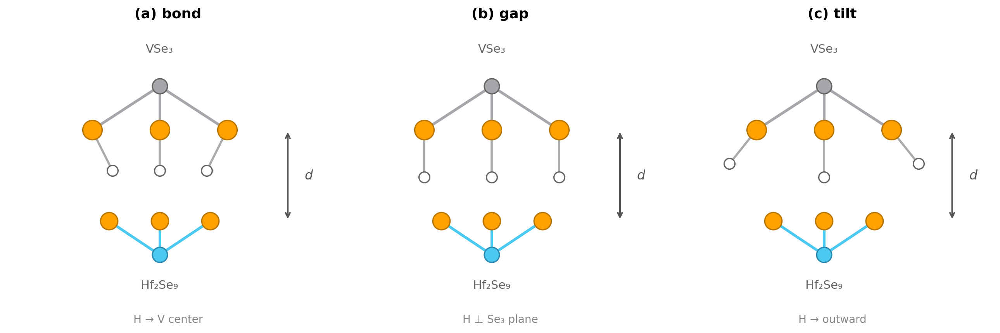
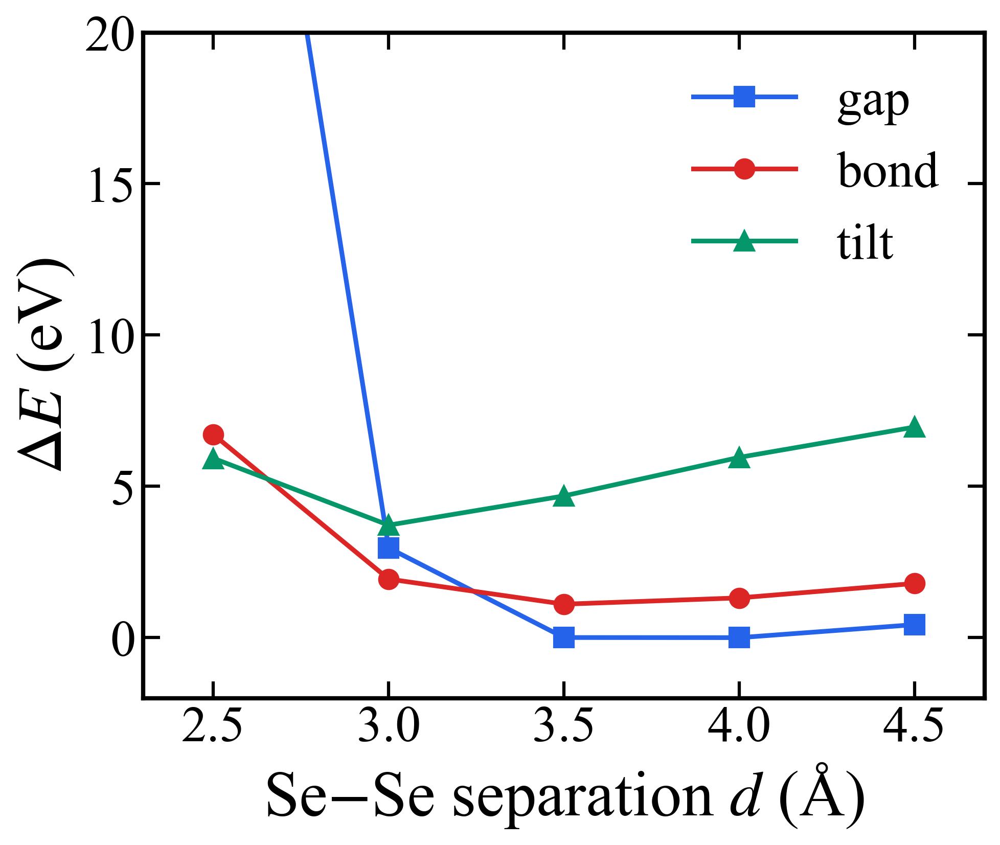
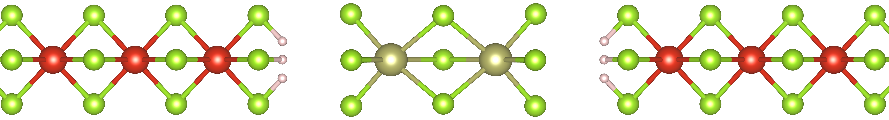
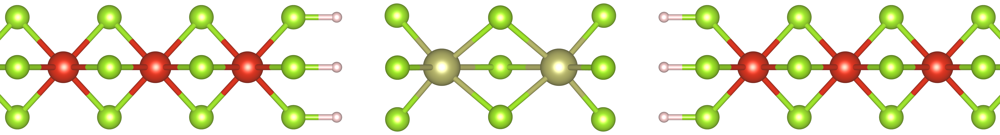
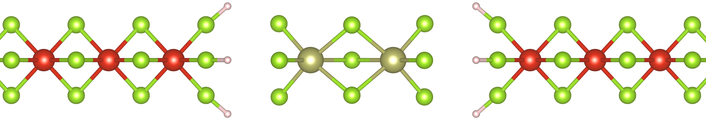
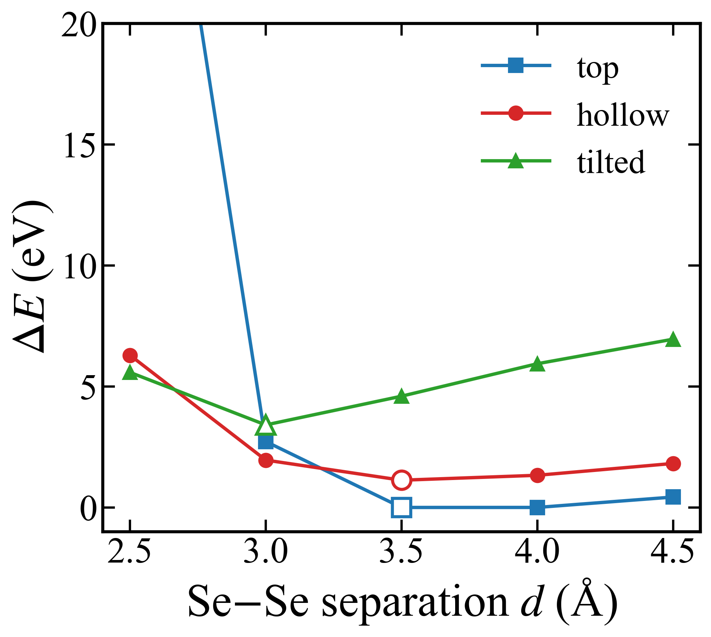

04. VSe₃ 계면의 H-termination: separation 최소점 복원
목표
(2026-04-07 미팅에서 제기된) 가설, 즉 맨몸(bare) VSe₃–Hf₂Se₉ 분리 곡선에서 평형점이 없는 것이 잘린 VSe₃ 계면 Se의 dangling bond 때문이라는 가설을 검증한다. TP 사슬에서 각 Se는 두 개의 V와 결합하는데 (V–Se = 2.508 Å), 사슬을 자르면 V 하나가 사라지면서 포화되지 않은(unsaturated) 결합이 남아 Hf₂Se₉와 비물리적으로 강하게 결합한다. Hf₂Se₉는 closed-shell이므로 문제는 VSe₃ 쪽에 국한된다. 검증 방법: VSe₃ 계면 Se에 H를 붙여 separation energy 곡선을 맨몸 경우와 비교한다.
방법
- 각 쪽 계면 Se 3개에 H 부착 (총 6 H), VSe₃ 쪽에만.
- H는 사라진 V 방향으로 배치 (Se–H 결합을 원래 V–Se 방향에 정렬).
- d(Se–H) = 1.46 Å (H₂Se 실험 r₀, NIST CCCBDB).
- Single-point 스캔 d = 2.0, 2.5, 3.0, 3.5, 4.0, 4.5 Å.
- vdW-DF2 (LMKLL), MeshCutoff 500 Ry, k = 1×1×4, 44 atoms (6 V + 2 Hf + 30 Se + 6 H).
여기서 d는 VSe₃ 말단 Se와 Hf₂Se₉ 말단 Se 사이의 z 거리다.
결과
H가 있으면 d = 3.5 Å에서 뚜렷한 separation energy 최소점이 나타난다 — 실험값 ~3.5 Å과 일치. 맨몸 구조는 단조 감소만 계속한다.
| d (Å) | Esep, H 있음 (eV) | Esep, H 없음 (eV) |
|---|---|---|
| 2.0 | +26.90 | — |
| 2.5 | +4.92 | −6.21 |
| 3.0 | +0.15 | −4.10 |
| 3.5 | −0.68 (최소) | −1.61 |
| 4.0 | −0.48 | 0.00 |
| 4.5 | 0.00 (기준) | — |

scripts/plot_sep_energy.py.)H 배향(orientation) 비교 (2026-04-16)
동일 조건에서 (vdW-DF2 single-point, 44 atoms, Se–H = 1.46 Å) 세 가지 초기 H 방향을 비교했다:
bond (H가 사라진 V 중심을 향함), gap
(H가 Se₃ 평면에 수직, 즉 순수 ±z), tilt (H를 반경 방향 바깥으로 45° 기울임).
gap이 전 범위에서 가장 안정하며, 최소점은 d = 3.5–4.0 Å에 있다 (두 점의 차이는 ~4 meV).bond은gap보다 1.11 eV,tilt은 3.72 eV 높다.- 권장 relaxation 시작 구조:
gap모드, d = 3.5 Å.


접합(junction) 구성 (2026-06-12)
세 모드에서의 H 패시베이션된 VSe₃–Hf₂Se₉–VSe₃ 접합; 세 모드 모두
d ≈ 3.5 Å에서 최소가 되며, top이 가장 안정하다.

bond (top) 구성.
gap (hollow) 구성.
tilt 구성.
논의
- H 패시베이션은 계면의 비물리적 강한 결합을 없앤다: d < 3.0 Å는 가파르게 상승하고 (Pauli 반발 / 반발 벽), d ≈ 3.5 Å는 vdW 인력과 반발이 균형을 이루며 (평형), d > 4.0 Å에서 수렴한다.
- 이는 VSe₃ Se dangling bond가 앞선 분리 실패의 주원인이었음을 가리킨다.
- H 방향 선택은 MoS₂-edge 문헌 (Bollinger 2003, Kronberg 2017, Lauritsen 2018)이 뒷받침한다: chalcogen–H 결합은 금속 중심이 아니라 dangling-bond 방향을 향하며, ~1 eV의 모드 간격도 이들 연구와 일치한다.
다음 단계 (기재된 대로)
- H 방향 확정 (bond/gap/tilt 비교).
- Transport 크기 (20 unit cells)에서 full relaxation.
- Hf₂Se₉ PDOS → band gap.
- TranSIESTA transport (electrode + device + I-V).